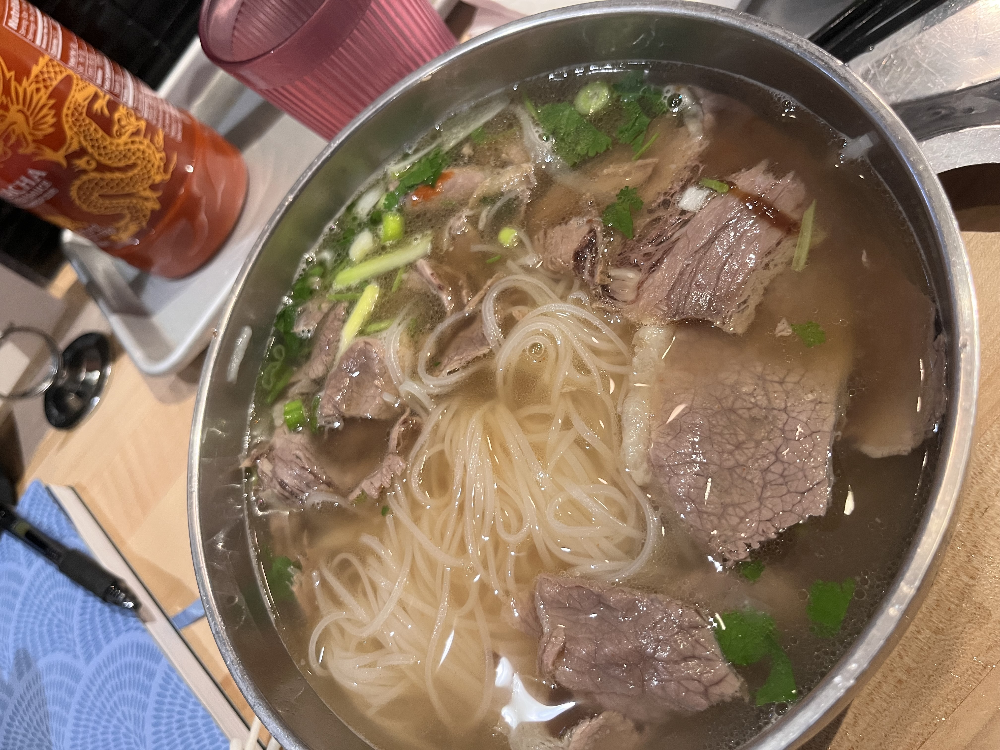
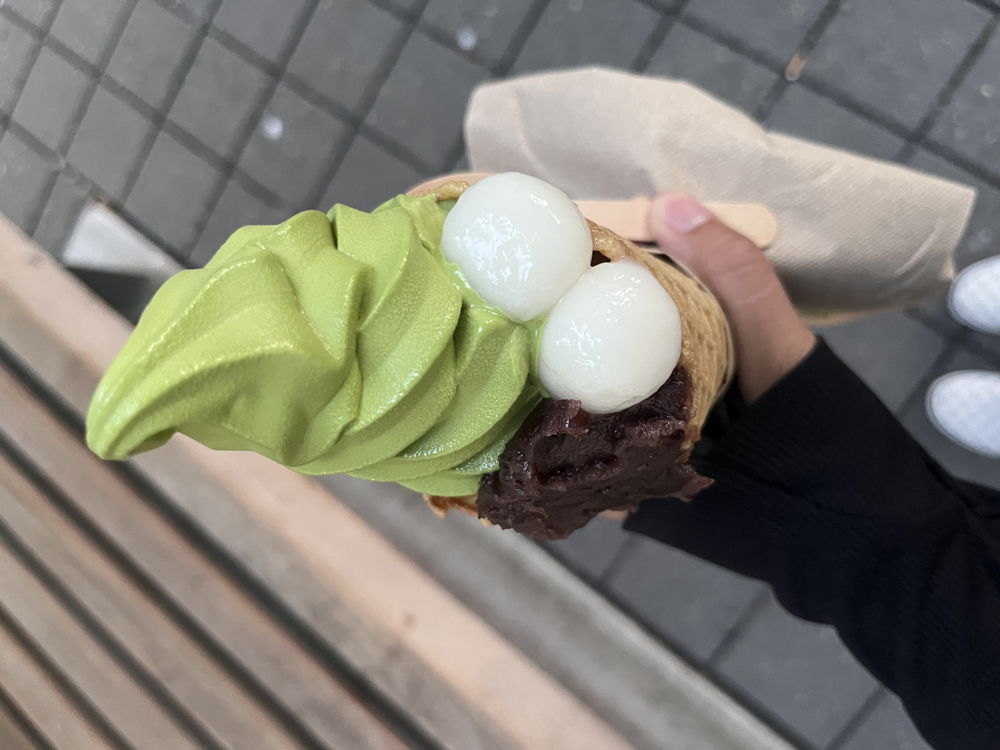
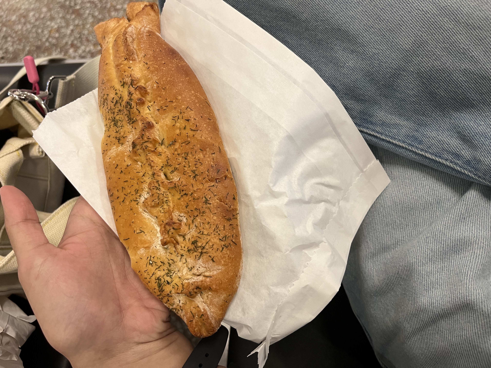
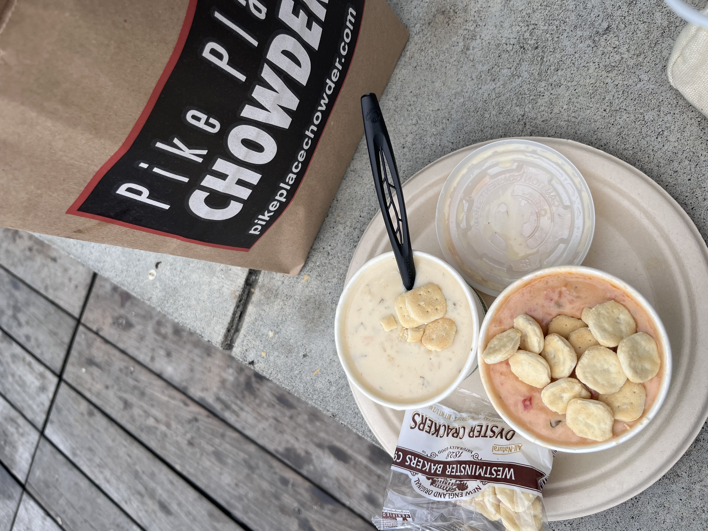

Adeline's Journey as a Foodie
Home Page
Madison, WI
Portland, OR
Seattle, WA
City: Seattle, WA
Vietnamese Cuisine
Japanese Dessert
Russian Pastry
Award-Winning Cuisine
1. Pho Bac

2. Nana's Green Tea

3. Piroshky Piroshky

4. Pike Place Chowder
